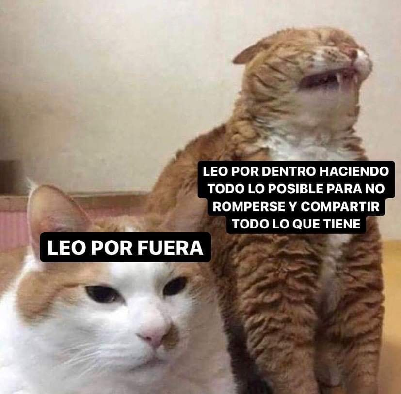
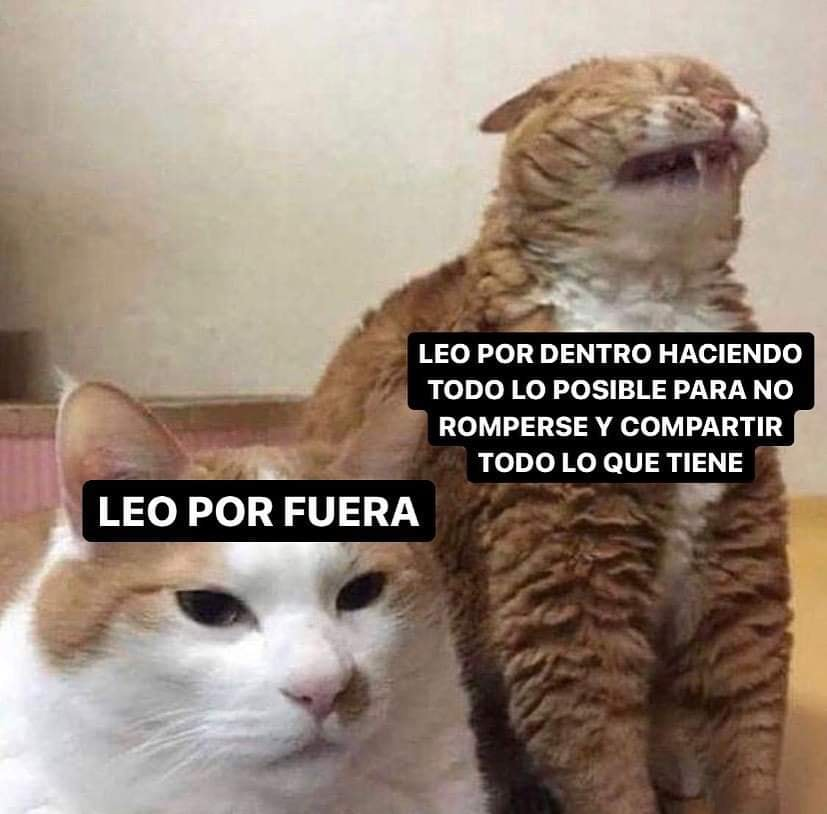

Como Empezar a Jugar Dota
Dota 2 puede ser intimidante. Es uno de los videojuegos más populares del mundo y, al mismo tiempo, muy poco amigable con los principiantes. Por eso, aquí queremos compartir una guía para comenzar a jugar Dota 2. Que la fuerza te acompañe.
¿Qué es Dota 2?
Toda partida de Dota 2 comienza de la misma manera, con dos equipos —Dire y Radiant— en esquinas opuestas de un mapa cuadrado y totalmente simétrico. En el medio, hay un río que cruza en diagonal el mapa y lo divide en dos sectores claramente diferenciados. El objetivo del juego es muy simple: Destruir la base enemiga que contiene una construcción llamada Ancestro (por si aún no lo sabías, Dota viene de “Defense of the Ancients” o defensa de los Ancestros). Para ello, las bases enemigas están conectadas por tres caminos o carriles: Top, Mid y Bot. Ahora bien, estos caminos están repletos de obstáculos que intentarán evitar que los equipos logren sus cometidos.
Las torres y los creeps
En primer lugar, cada bando cuenta con tres torres que constituyen su primera línea de defensa y atacarán a todos los integrantes del equipo contrario. Además, cada equipo tiene dos barracones. Cada 30 segundos, de ellos saldrán unas criaturas llamadas “creeps”, los cuales atacarán estructuras, creeps y héroes enemigos.
-Existen tres clases de creeps:
-Cuerpo a cuerpo: Solo son capaces de atacar a corta distancia. Son los más numerosos.
-Combate a distancia: Causan menos daño a los héroes y lanzan hechizos a distancia.
-Asedio: Son catapultas que atacan edificios enemigos.
Las Junglas
Las Junglas son sectores específicos del mapa y se encuentran a ambos lados del río. Allí viven los creeps neutrales que, al matarlos, también otorgan oro y experiencia. Uno de las principales tácticas para ganar una partida de Dota 2 es controlar las Junglas, ya que son una rica fuente de recursos y conectan los distintos carriles del mapa. Por lo tanto, las Junglas son el lugar perfecto para hacer algo de “farming” (como se llama a la acción de recolectar oro) y “ganking” (desplazarse para atacar enemigos)
Los héroes
Los héroes son los protagonistas de Dota 2. Son los personajes con los que se juega y, si bien no siempre hay la misma cantidad, suelen ser alrededor de 120. Además, las apariencias de los héroes de Dota 2 pueden modificarse y personalizarse mediante equipamientos, algo que tal vez ya conozcas bajo el concepto de skins. Por otra parte, cada equipo cuenta con cinco héroes. Durante la partida, estos recolectan experiencia y oro, que los hace más fuertes y les permite comprar ítems de Dota 2 que ofrecen nuevas habilidades. A su vez, cada héroe cuenta con tres atributos: Fuerza, Agilidad e Inteligencia. Dependiendo de la distribución de estos atributos, eso hace que un héroe sea idóneo para un rol determinado. Un momento, aún no hemos explicado los roles…
Los roles de los héroes de Dota 2
Como en todo deporte por equipos, en Dota 2 cada jugador debe asumir un rol particular que tiene ciertas responsabilidades. Hay más de 10 roles posibles. Algunos están claramente definidos y estandarizados. En cambio, otros roles son más difusos o surgieron en los últimos tiempos. Estos son algunos de los roles que puedes asumir en Dota 2:
-Iniciador: Su tarea es ser la punta de lanza, aquel que comienza el ataque al enemigo.
-Apoyo (Support): Es aquel que te cubre la espalda. Su tarea es asistir a sus aliados de Dota 2, protegiéndolos o facilitándoles la adquisición de oro, ítems y experiencia.
-Portador (Carry): Su importancia se revela al final de la partida. Es un héroe que al principio no es demasiado fuerte y necesita de la protección de su equipo. Sin embargo, a medida que gana experiencia y oro se irá convirtiendo en el más
-Ganker: Su tarea es atacar enemigos aislados o que estén huyendo de alguna batalla. Para ello deben ser rápidos y tener gran poder de ataque desde el comienzo de la partida.
-Jungler: Como su nombre lo indica, este héroe pasará buena parte de la partida en la Jungla y deberá ser experto en matar creeps neutrales para “farmear” experiencia y oro. También deberá tener habilidades para ser un Ganker eficiente.
-Offlaner: Deben ser resistentes, ya que irán a ocupar el carril más difícil del juego (el Top, si es Radient, y el Bot, si es Dire).
Imagenes Dota:

 
